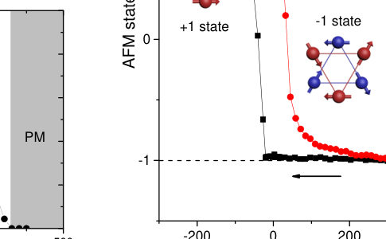

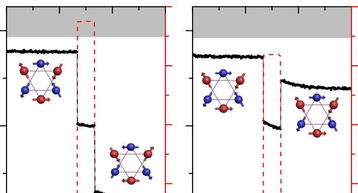
← Index · ← Previous · Next →
Authors: Minhoon Kim, Wonjun Kang, Daeseong Yong, Junhan Cho, Jaeup U. Kim
Type: theory · Category: statistical mechanics · PDF: https://arxiv.org/pdf/2605.23758v1
Analysis basis: full PDF text, analyzed in chunks
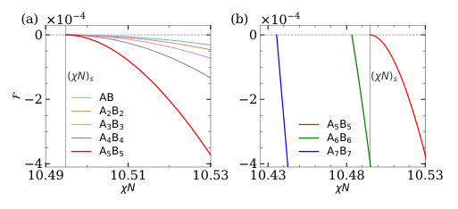
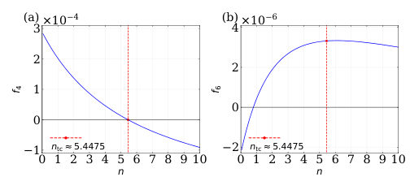
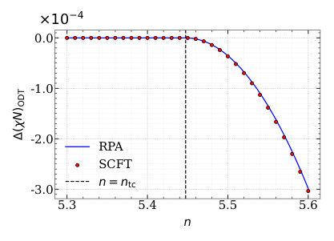
Summary. This paper demonstrates that the architecture of a star polymer, specifically the number of arms, can act as a thermodynamic tuning parameter to induce tricriticality. By finding a specific arm number where the order-disorder transition changes from continuous to first-order, the study provides a rare analytically tractable example of architecture-induced phase transitions.
Why it may be interesting. not directly relevant
Main problem. The study investigates the nature of the order-disorder transition (ODT) in symmetric star polymer melts and identifies the mechanism that drives the transition from second-order to first-order.
Main result. The authors analytically identify a tricritical arm number, n_tc approximately 5.4475, where the transition character changes, and show that the transition is driven by inter-arm correlations at the common junction.
Method. The researchers use a sixth-order free-energy expansion within the Random Phase Approximation (RPA) and validate the results using Self-Consistent Field Theory (SCFT) and Langevin Field Theory simulations.
Model / system. The system consists of incompressible melts of symmetric A_nB_n star polymers, where each star has n arms of type A and n arms of type B connected to a common junction, modeled using a Gaussian chain model.
Key observables. Order parameter (density modulation amplitude), phase boundary shift, and the quartic and sextic Landau coefficients.
Important parameters / regimes. Arm number (n), Flory-Huggins interaction parameter (chi*N), and composition fraction (f).
Assumptions / limitations. The model assumes incompressible melts and uses a mean-field framework (RPA and SCFT) within a Gaussian chain approximation.
Figures summary. Figure 1 shows free-energy curves illustrating continuous vs. discontinuous transitions; Figure 2 shows the vanishing and sign change of the quartic coefficient at the tricritical point.
Paper structure. The paper introduces the problem of transition character, develops a sixth-order RPA expansion, provides analytical predictions for the tricritical point and phase boundaries, validates these with SCFT, and discusses the physical origin via inter-arm correlations.
Tricriticality usually requires tuning an additional thermodynamic parameter. Here we show that, in symmetric $\mathrm{A}_n\mathrm{B}_n$ star-polymer melts, the arm number $n$ itself plays this role and drives the order--disorder transition (ODT) from second order to first order. By developing a sixth-order free-energy expansion within the random phase approximation and comparing it with self-consistent field theory (SCFT) calculations, we analytically identify a tricritical arm number, $n_{\mathrm{tc}}\approx 5.4475$. For $n
Authors: Pritam Das, Subhamita Sengupta, Anjan Jana, Rishabh Duhan, Sulagna Dutta, Arghya Dutta, John Jesudasan, Vivas Bagwe, Pratap Raychaudhuri
Type: experiment · Category: disordered systems and neural networks · PDF: https://arxiv.org/pdf/2605.23567v1
Analysis basis: full PDF text, analyzed in chunks
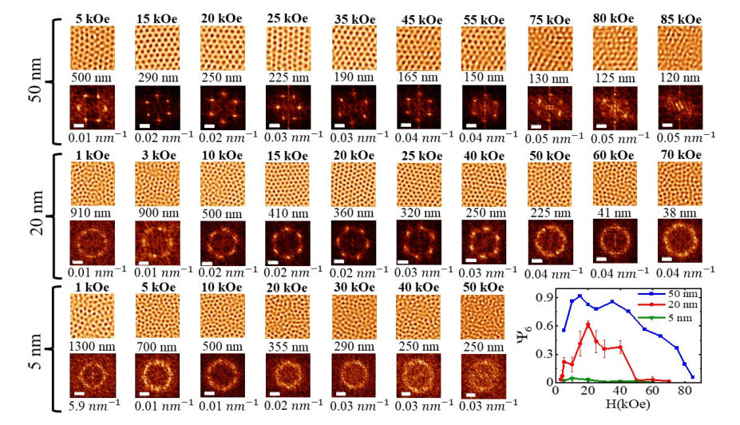
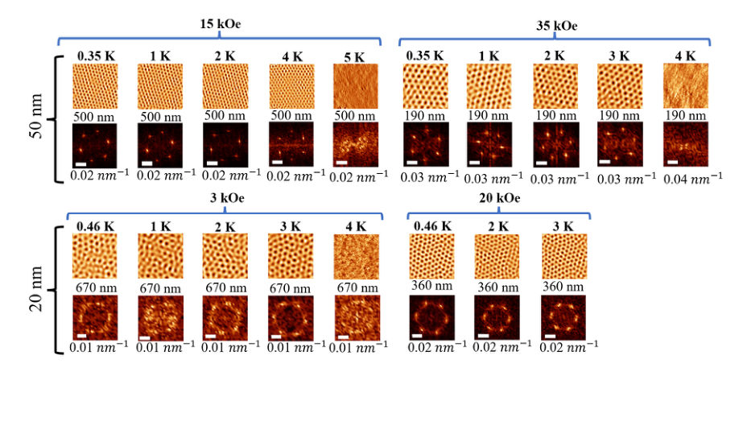
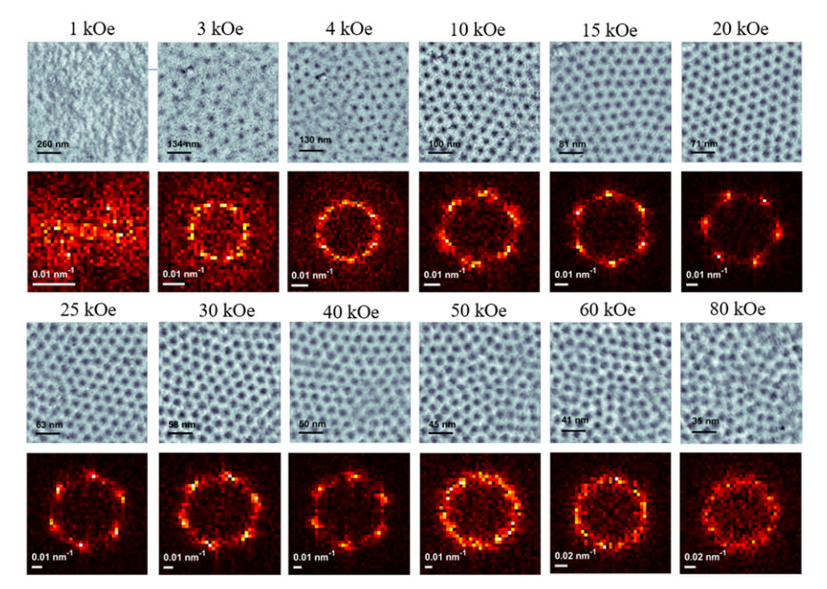
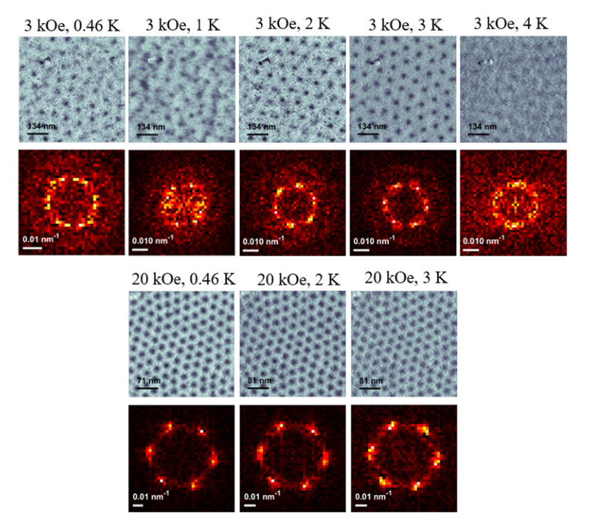
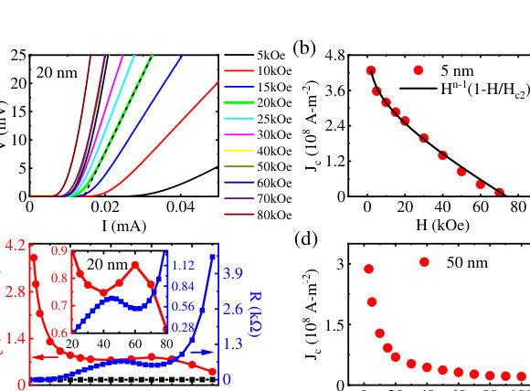
Summary. This paper maps the vortex phase diagram of amorphous Re6Zr thin films, revealing that the 'inverse melting' transition is highly sensitive to film thickness. It shows that intermediate thicknesses allow for a re-entrant phase where increasing temperature induces order, while extreme thicknesses favor either a permanent liquid or a stable solid state.
Why it may be interesting. not directly relevant
Main problem. The study investigates the vortex state phase diagram in amorphous Re6Zr thin films, specifically focusing on the phenomenon of 'inverse melting' where a vortex liquid transitions into a crystalline solid as temperature increases.
Main result. The researchers demonstrate that the inverse melting transition is thickness-dependent: 5 nm films remain in a disordered liquid state, 20 nm films exhibit re-entrant liquid-solid-liquid behavior, and 50 nm films maintain a stable crystalline solid.
Method. The study employs Scanning Tunneling Spectroscopy (STS) for real-space imaging, magnetotransport measurements (R-T and I-V characteristics), and two-coil mutual inductance for AC magnetic screening.
Model / system. The physical system consists of amorphous Re6Zr (a-ReZr) thin films with varying thicknesses (5 nm, 20 nm, and 50 nm) in the Type II superconducting regime, where vortex dynamics are influenced by the competition between pinning, thermal fluctuations, and vortex-vortex interactions.
Key observables. Differential conductance maps (dI/dV), orientational order parameter (psi_6), 2D Fourier Transforms (2DFT), critical current density (Jc), resistance (R), and complex magnetic susceptibility (chi' and chi'').
Important parameters / regimes. Magnetic field (H), temperature (T), film thickness (5, 20, 50 nm), upper critical field (Hc2), and Maki parameter (alpha).
Assumptions / limitations. The transition is assumed to be broadened by quenched random disorder rather than being a sharp first-order transition; the Gittleman-Rosenbaum model is used to treat vortex motion as an overdamped harmonic oscillator.
Figures summary. Figure 1 shows STS conductance maps and 2D-FFTs for different thicknesses; Figure 2 shows temperature evolution of vortex configurations; Figure 5/6 shows I-V characteristics, Jc dependence, and resistance peaks; Figure 7 shows AC magnetic screening response (chi' and chi'').
Paper structure. The paper introduces the inverse melting phenomenon, describes the experimental setup and material preparation, presents thickness-dependent imaging and transport results, analyzes the phase boundaries and magnetic response, and concludes with a discussion on the interplay of dimensionality and disorder.
In Type II superconductors, the vortex lattice can exhibit "inverse melting," transitioning from a liquid to a crystalline solid as temperature increases. While recently observed via scanning tunneling microscopy in a 20 nm thick amorphous Re6Zr thin film, this work investigates the corresponding d.c. transport and low-frequency magnetic screening responses. By identifying distinct signatures of these transitions and integrating scanning tunneling spectroscopy imaging, we construct a comprehensive vortex-state phase diagram in the magnetic field-temperature parameter space. Furthermore, we demonstrate that inverse melting is thickness-dependent: a 5 nm film retains an inhomogeneous liquid state, while a 50 nm film maintains a crystalline solid structure except near the upper critical field.
Authors: Xiaokang Li, Jing Zhang, Xiaodong Guo, Zengwei Zhu
Type: experiment · Category: strongly correlated electrons · PDF: https://arxiv.org/pdf/2605.23205v1
Analysis basis: full PDF text, analyzed in chunks


Summary. This paper demonstrates that heating Mn3Sn above its Neel temperature allows for the switching of its chiral antiferromagnetic order using extremely weak magnetic fields. This 'thermal softening' approach significantly reduces the energy barrier for magnetic manipulation. The findings suggest that thermal effects should be integrated with spin-torque mechanisms for efficient future spintronic device design.
Why it may be interesting. not directly relevant
Main problem. The challenge of reliably switching the chiral antiferromagnetic order in the Weyl antiferromagnet Mn3Sn using minimal external magnetic fields.
Main result. By using pulsed thermal annealing to heat the material above its Neel temperature, the magnetic anisotropy barrier is removed (thermal softening), allowing switching with sub-millitesla fields.
Method. The researchers used pulsed thermal annealing on Mn3Sn single crystals on a resistive heater chip, monitoring the Anomalous Hall Effect (AHE) during heating and cooling in small magnetic fields.
Model / system. The physical system is the Weyl antiferromagnet Mn3Sn, which possesses a non-collinear 120-degree spin structure on a kagome lattice and a cluster magnetic octupole order.
Key observables. Anomalous Hall Effect (AHE) signal, Hall resistivity, and the threshold magnetic field (B0) required for switching.
Important parameters / regimes. Neel temperature (TN approx 425 K), magnetic field scales as low as 0.1 mT, and pulse duration/temperature rise in nanoscale devices.
Assumptions / limitations. The switching mechanism assumes that crossing the Neel temperature is necessary to erase the magnetic anisotropy barrier.
Figures summary. Figure 1 shows the experimental setup, AHE hysteresis, and the decrease of the threshold field near TN; Figure 2 shows the time evolution of the AHE signal during annealing and the switching ratio vs. cooling field; Figure 3 compares annealing results above and below TN.
Paper structure. The paper introduces the problem of AFM switching, describes the experimental setup for thermal annealing, presents the temperature dependence of the switching field, demonstrates the necessity of crossing TN, and provides a thermal model for device-scale applications.
The manipulation of antiferromagnetic (AFM) order is a central theme in modern spintronics. In this work, we achieve reliable switching of the chiral AFM state in the Weyl antiferromagnet Mn$_3$Sn using a heat pulse combined with a very small magnetic field as small as 0.1 mT. By systematically measuring the anomalous Hall effect (AHE) in high-quality single crystals, we show that the field needed for switching decreases as the temperature approaches the Néel temperature $T_N$, and vanishes at $T_N$. Pulsed thermal annealing above $T_N$ followed by cooling in a tiny external field enables full and reproducible switching of the magnetic octupole order. Our results show that thermal softening (heating above $T_N$ to temporarily remove the magnetic anisotropy) is a key step that lowers the energy barrier to nearly zero. This allows an extremely weak directional field (like the effective field from spin-orbit torque in thin-film devices) to set the final magnetic state during cooling. We also provide a simple model to estimate the temperature rise in nanoscale devices under current pulses, giving practical guidance for device design. This work highlights that thermal effects are not a side issue but an important partner to spin torques, and suggests that future work should take both into account.
Authors: Hoyun Choi, Junghyo Jo, Deok-Sun Lee
Type: theory · Category: disordered systems and neural networks · PDF: https://arxiv.org/pdf/2605.23285v1
Analysis basis: full PDF text, analyzed in chunks
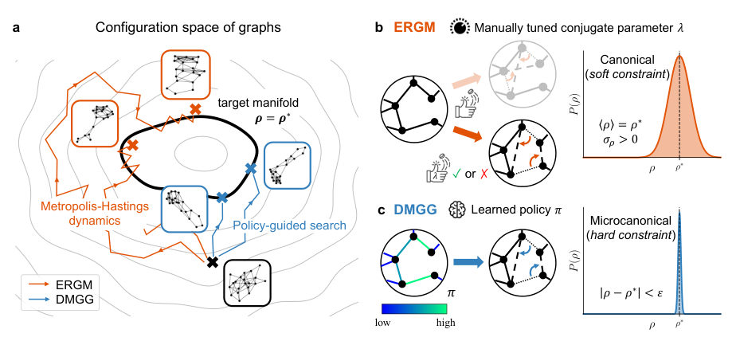
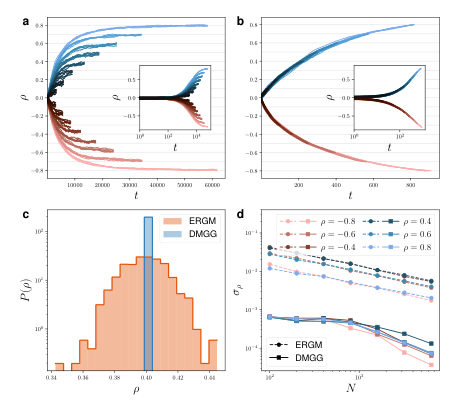
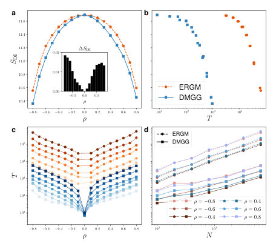
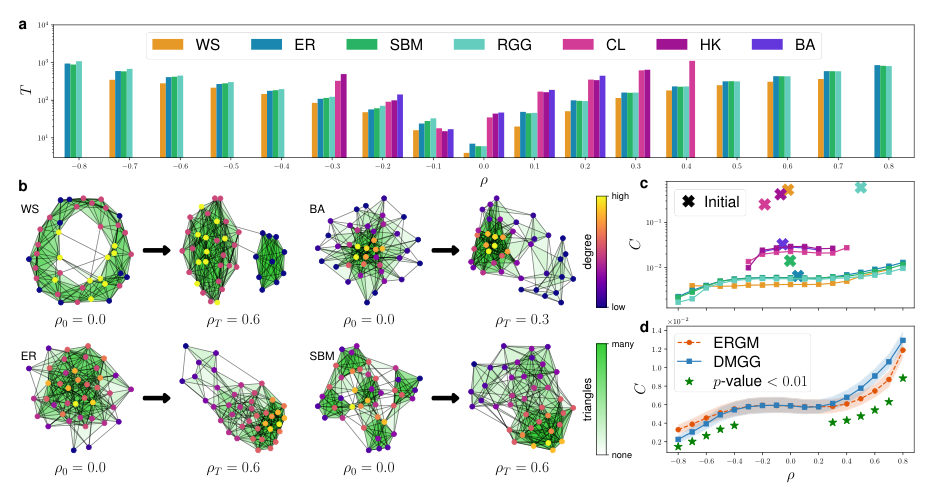
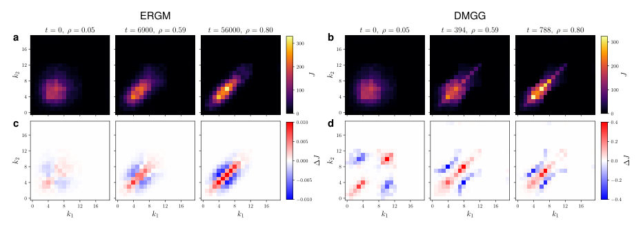
Summary. This paper presents a deep reinforcement learning approach to generate random graphs with exact structural constraints. By treating graph rewiring as a policy-guided search, the method significantly outperforms traditional statistical mechanics-based sampling in both speed and precision. This allows for the creation of precise null models to study how specific network properties drive complex system functions.
Why it may be interesting. not directly relevant
Main problem. The difficulty of efficiently generating microcanonical graph ensembles that satisfy hard structural constraints, such as a specific target assortativity, without the computational burden of parameter tuning or structural fluctuations.
Main result. The introduction of the Deep Microcanonical Graph Generator (DMGG), an RL framework that achieves target assortativity with much higher precision and an order of magnitude faster than traditional ERGM methods while preserving configurational diversity.
Method. A Reinforcement Learning framework using Proximal Policy Optimization (PPO) and a Graph Isomorphism Network (GIN) to perform directed, degree-preserving edge rewirings.
Model / system. Random graphs and complex networks with varying topologies (e.g., ER, BA, WS, SBM) characterized by a fixed degree sequence and a target assortativity coefficient.
Key observables. Assortativity (rho), clustering coefficient (C), dyad-independent entropy (SDI), and the joint-degree matrix (J).
Important parameters / regimes. Target assortativity (rho*), precision tolerance (epsilon), and the number of rewiring steps (T).
Assumptions / limitations. The framework assumes the ability to perform degree-preserving rewirings and focuses on the constraint of assortativity.
Figures summary. Figure 1 compares ERGM and DMGG dynamics; Figure 2 shows convergence trajectories and scaling of precision; Figure 3 evaluates ensemble diversity and rewiring cost; Figure 4 shows rewiring steps as a function of target rho and structural evolution; Figure 5 visualizes the joint-degree matrix and flux changes.
Paper structure. The paper identifies the limitations of canonical ensembles, introduces the DMGG RL framework, details the neural architecture and training process, benchmarks the model against ERGM in terms of speed and precision, and analyzes the scaling and structural implications of the generated ensembles.
How network structure determines function is a fundamental question, and it can be investigated by graph ensembles with precisely controlled structural properties. Canonical approaches, formulated as exponential random graph models (ERGMs), enforce constraints only in expectation, allowing individual realizations to fluctuate around the target. Conversely, microcanonical ensembles impose hard constraints exactly, but practical sampling methods beyond fixing the degree sequence have remained out of reach. Here we introduce the Deep Microcanonical Graph Generator (DMGG), a reinforcement learning (RL) framework that transforms any given graph through degree-preserving rewirings to exactly reach a prescribed assortativity, which characterizes the degree--degree correlation of adjacent nodes. Instead of relying on the entropically dominated Metropolis--Hastings dynamics of the ERGM, DMGG employs a policy-guided search that maximally alters the joint-degree matrix. This eliminates exhaustive parameter tuning and accelerates generation by at least an order of magnitude while preserving configurational diversity. As DMGG generalizes across various graph sizes, sparsities, and topologies, it provides exact null models that allow for the quantitative isolation of secondary observables, such as the clustering coefficient. These results establish RL as a practical and powerful paradigm for generating hard-constrained graphs, opening avenues to investigate structure-function relationships free from ensemble artifacts.
Authors: Hyunwoo Kim, Youngseok Lee
Type: theory · Category: quantum information and computing · PDF: https://arxiv.org/pdf/2605.23377v1
Analysis basis: full PDF text, analyzed in chunks
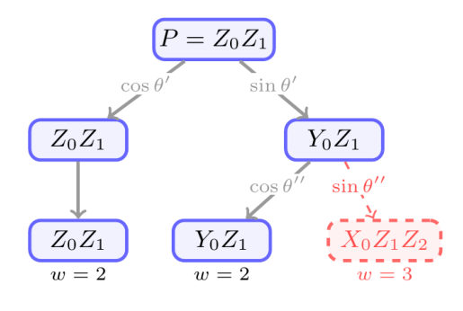
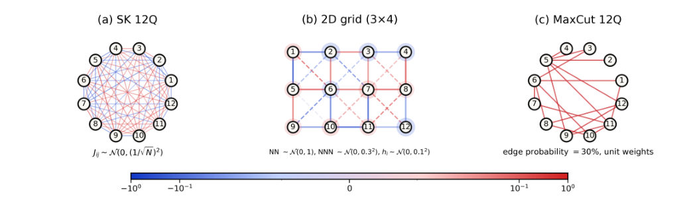
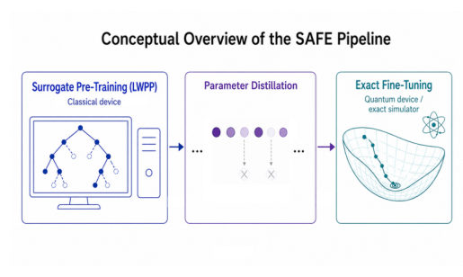
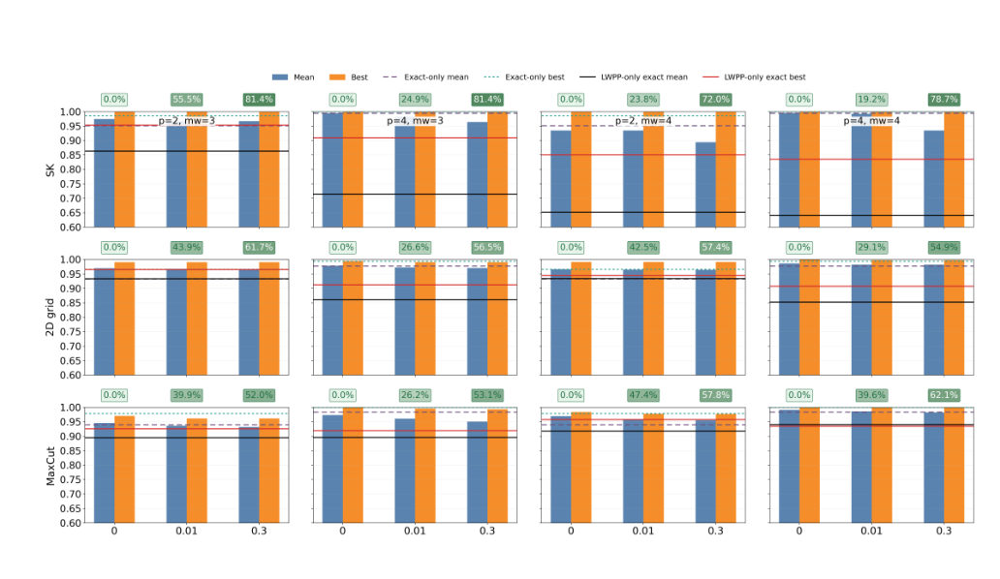
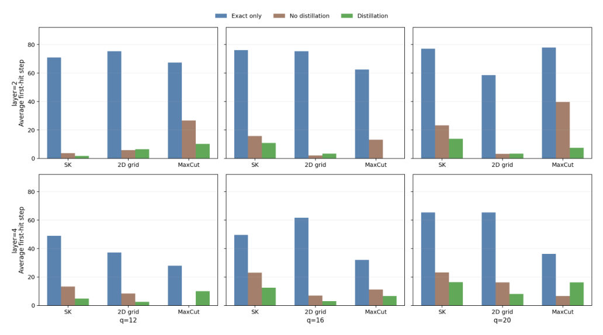
Summary. This paper introduces the SAFE framework to optimize Multi-Angle QAOA by using a classical surrogate to pre-train parameters and a distillation step to prune unnecessary angles. This approach significantly reduces the quantum computational resources required for fine-tuning without sacrificing the quality of the final solution.
Why it may be interesting. not directly relevant
Main problem. The high-dimensional parameter space of Multi-Angle QAOA (ma-QAOA) makes training computationally expensive and difficult due to the large number of required exact energy and gradient evaluations on quantum hardware.
Main result. The SAFE framework achieves a 64.3% reduction in active parameters and a 94.5% reduction in estimated QPU workload while maintaining high approximation ratios and accelerating convergence.
Method. A three-stage pipeline: (1) LWPP pre-training using a truncated classical surrogate, (2) parameter distillation to remove near-zero angles, and (3) exact fine-tuning using the full energy objective.
Model / system. The study evaluates ma-QAOA on Ising-type Hamiltonians, specifically the Sherrington-Kirkpatrick model, 2D square-lattice spin glasses, and Max-Cut problems on random graphs.
Key observables. Approximation ratio, first-hit step (convergence speed), and estimated QPU workload (ballpark cost).
Important parameters / regimes. Circuit depth (p), number of qubits (n), LWPP truncation weight (w_max), and parameter distillation threshold.
Assumptions / limitations. The effectiveness relies on the assumption that many rotation angles remain near zero (identity) after the surrogate pre-training stage.
Figures summary. Figure 1 shows the LWPP truncation process; Figure 2 visualizes the problem instances; Figure 3/4 shows approximation ratios across different settings; Figure 5 compares convergence speed; Figure 6 shows exact fine-tuning trajectories; Figure 7 compares energy gaps and cosine similarity.
Paper structure. The paper introduces the ma-QAOA bottleneck, presents the three-stage SAFE framework (pre-training, distillation, fine-tuning), evaluates the method on various spin glass and combinatorial models, and analyzes the efficiency gains in terms of parameter count and hardware workload.
The multi-angle Quantum Approximate Optimization Algorithm (ma-QAOA) extends the Quantum Approximate Optimization Algorithm (QAOA) by assigning a larger number of independent variational parameters, thereby increasing expressivity and improving performance at low circuit depths. However, this larger parameterization makes training more difficult and requires repeated circuit evaluations for gradient-based optimization. In this work, we propose the Surrogate-Assisted and Fine-tuning Enhanced (SAFE) framework. SAFE first uses Low-Weight Pauli Propagation (LWPP) as a classical surrogate for pre-training ma-QAOA parameters before exact optimization. SAFE then applies parameter distillation, which removes angles that remain near zero after surrogate pre-training. Finally, SAFE performs exact fine-tuning by optimizing the remaining active parameters using the exact energy objective. We evaluate SAFE on instances of the Sherrington-Kirkpatrick model, two-dimensional square-lattice spin glass, and Max-Cut. SAFE with distillation provides the strongest overall results relative to exact-only: (i) a 64.3 percent reduction in active parameter count and (ii) a 94.5 percent reduction in estimated QPU workload. Within the SAFE workflow, adding distillation further reduces the optimizer steps to the near-optimal regime by 44.4 percent relative to without distillation. These results provide evidence that SAFE ma-QAOA can accelerate convergence to high-quality solutions while reducing the required quantum resources for exact fine-tuning, offering a resource-efficient route toward expressive ma-QAOA on NISQ hardware.
Authors: Haruto Sato, Kota Mihara, Kenshin Inamura, Yusuke Tajima, Kazutaka Kudo, Jobu Matsuno, Junichi Shiogai
Type: experiment · Category: strongly correlated electrons · PDF: https://arxiv.org/pdf/2605.23313v1
Analysis basis: full PDF text, analyzed in chunks
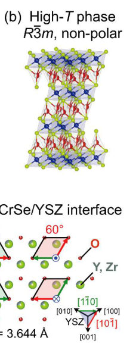
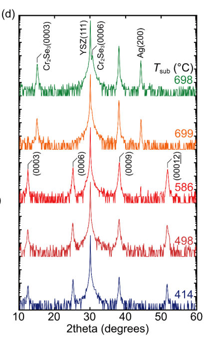
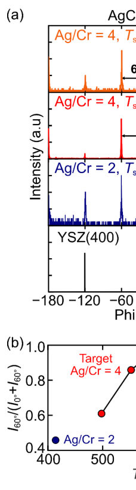
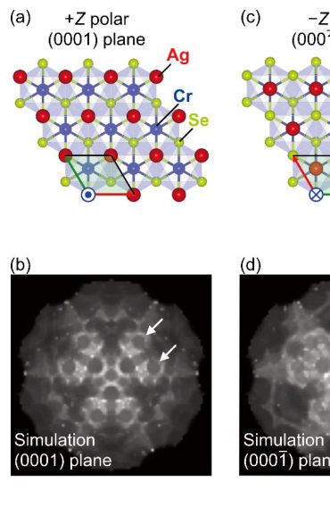
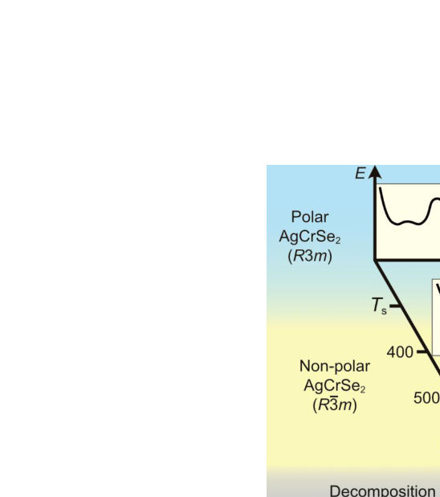
Summary. This paper demonstrates how to suppress unwanted twisted domains in AgCrSe2 thin films by optimizing growth temperature and Ag/Cr ratios. By finding a critical temperature window, the authors achieved single-domain 60-degree oriented films, which is crucial for device applications.
Why it may be interesting. not directly relevant
Main problem. The study aims to control structural domains (twisted and polar) in epitaxial AgCrSe2 thin films to utilize their intrinsic physical properties.
Main result. The researchers identified a critical growth temperature for achieving a single 60-degree domain and found that Ag-rich targets help maintain stoichiometry at higher temperatures.
Method. Pulsed-laser deposition (PLD) was used for growth, with structural characterization via XRD, AFM, EDX, and TOFLAS for polarity analysis.
Model / system. The system consists of AgCrSe2, a polar magnetic semiconductor with a rhombohedral lattice, grown epitaxially on a lattice-matched YSZ(111) substrate.
Key observables. In-plane domain orientation (0 vs 60 degrees), polar orientation (+Z vs -Z), surface roughness (RMS), and Ag/Cr stoichiometry.
Important parameters / regimes. Substrate temperature (Tsub), Ag/Cr target composition ratio, and the Ag re-evaporation-driven decomposition regime.
Figures summary. Fig 1: Crystal structure and domain schematics; Fig 2: Dependence of roughness and stoichiometry on temperature with morphology images; Fig 3: In-plane XRD phi-scans and temperature dependence of domain fraction; Fig 4: TOFLAS pole figures and atomic arrangement.
Paper structure. The paper introduces the material and domain problem, details the growth and characterization methods, presents results on stoichiometry and surface quality, analyzes the temperature-dependent domain dynamics, and concludes with polarity analysis via TOFLAS.
Control of structural domains in epitaxial thin films of functional materials is a fundamental technique to utilize their intrinsic physical and chemical properties in solid-state devices. In this study, we report on suppression of twisted-domain formation in thin-film growth of polar magnetic semiconductor AgCrSe$_{2}$ using pulsed-laser deposition. In exploring concomitant optimized growth temperature and Ag/Cr composition ratio of supply, we find the critical growth temperature ($T\mathrm{_{sub}}$) for obtaining single 60$^{\circ}$ domain in c-axis oriented AgCrSe$_{2}$ thin film on a lattice-matched (111) plane of the yttria-stabilized zirconia substrate. At temperatures below and above the critical $T\mathrm{_{sub}}$, metastable 0$^{\circ}$ domain in addition to the 60$^{\circ}$ domain emerges, indicating delicate energy balance of thermodynamic stability for obtaining the single-domain structure. Surface structural analysis using time-of-flight low-energy atom scattering spectroscopy reveals the presence of two polar orientations along $+Z$ and $-Z$ directions. These findings provide valuable insights into the thin-film growth mechanisms for a family of two-dimensional compounds with rhombohedral lattices.
Authors: Jazzmin Victorin, Shreenanda Ghosh, Seyed Koohpayeh, Chris Lygouras, Natalia Drichko
Type: both · Category: strongly correlated electrons · PDF: https://arxiv.org/pdf/2605.23133v1
Analysis basis: full PDF text, analyzed in chunks
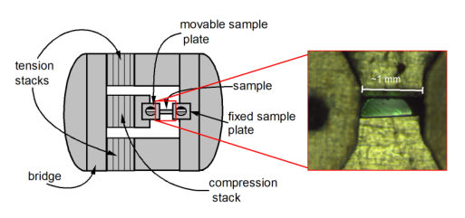
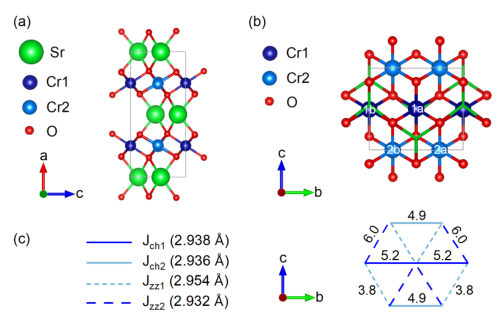
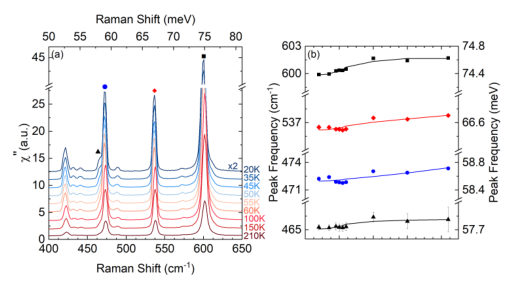
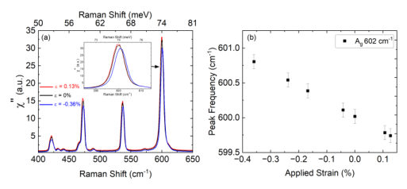
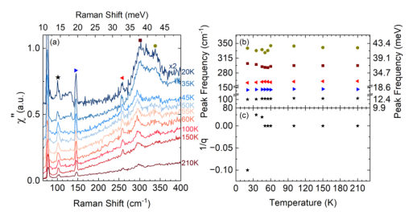
Summary. This paper explores how applying uniaxial pressure can tune the magnetic frustration and anisotropy in the triangular lattice antiferromagnet alpha-SrCr2O4. By using Raman spectroscopy, the authors show that mechanical strain can shift magnetic excitation energies, providing a method to control the magnetic ground state. This work is significant for understanding how lattice distortions influence quantum magnetic phases.
Why it may be interesting. not directly relevant
Main problem. Investigating the ability to tune the magnetic anisotropy and exchange interaction ratio (J2/J1) in a frustrated triangular lattice antiferromagnet using in-situ uniaxial pressure.
Main result. The study demonstrates that compressive pressure reduces magnetic anisotropy, while tensile pressure increases it, effectively tuning the frustration in the system. The researchers also confirmed efficient pressure transmission through shifts in Raman-active phonon frequencies.
Method. In-situ Raman spectroscopy was used under applied uniaxial strain via a piezoelectric cell, complemented by Linear Spin Wave Theory (LSWT) and two-magnon density of states calculations.
Model / system. The system is alpha-SrCr2O4, a quasi-2D S=3/2 triangular lattice Heisenberg antiferromagnet with an orthorhombic structure and incommensurate helical magnetic order below 43 K.
Key observables. Two-magnon excitations (at 15.5 meV and 40 meV), Raman-active oxygen phonon frequencies, phonon line shapes (Fano asymmetry), and Gruneisen parameters.
Important parameters / regimes. Exchange anisotropy ratio (J2/J1), Neel temperature (TN = 43 K), strain range (-0.41% to +0.16%), and Gruneisen parameter (gamma = 0.45).
Assumptions / limitations. Assumed a Poisson ratio of 0.2 and that phonon width temperature dependence follows the Klemens model; used the approximation of Linear Spin Wave Theory for magnon dispersion.
Figures summary. Fig 1: Crystal structure and exchange paths; Fig 2: Schematic of strain application; Fig 3: Temperature dependence of phonons in the strain cell; Fig 4: Raman spectra under different pressures; Fig 5: Temperature-dependent Raman spectra; Fig 7: LSWT calculations for spin wave dispersion and two-magnon DOS.
Paper structure. The paper introduces the frustrated triangular lattice problem, describes the experimental setup for uniaxial pressure Raman spectroscopy, presents the results of phonon frequency shifts to verify strain, details the observation of two-magnon excitation tuning, and concludes with theoretical spin-wave modeling to interpret the magnetic anisotropy changes.
Triangular lattice antiferromagnets first attracted attention as a frustrated magnetic lattice which can serve as a platform to realize the resonating valence bond state. While the triangular lattice itself was shown to support classical 120 degree order, many theoretical phase diagrams suggest a quantum spin liquid state within a small range of parameters. One possible avenue to achieve such a state is to tune the anisotropy of the triangular lattice antiferromagnet by applying uniaxial pressure. This motivated our Raman scattering study of quasi-two-dimensional antiferromagnet $α$-SrCr$_2$O$_4$ under applied uniaxial pressure. Under ambient conditions, $α$-SrCr$_2$O$_4$ develops long-range helical magnetic order below T$_N$ = 43 K. We identify two-magnon excitations associated with this long-range antiferromagnetic order below T$_N$ at 15.5 meV and 40 meV by comparison with spin wave calculations. We observe the two features from the two-magnon excitation shift away from (towards) each other under applied tensile (compressive) pressure, indicating a decrease (increase) in anisotropy. Raman active phonons show a shift to higher (lower) frequencies under applied compressive (tensile) pressure, indicating efficient transmission of pressure and tuning of the lattice. We show spin wave and two-magnon density of states calculations under uniaxial pressure are consistent with our experimental results.
Papers from cond-mat.mtrl-sci, mes-hall, other, soft, supr-con. These archives are de-prioritized — they appear at the end regardless of relevance score.
Authors: Bhabani Sankar Sahoo, Nils Fritjof Langlotz, Shachi Machchhar, Kartik Gaur, Robin Günkel, Max Bergmann, Naghmeh Ghadghooni, Aris Koulas-Simos, Jürgen Belz, Chirag Chandrakant Palekar, Maximilian Ries, Kerstin Volz, Stephan Reitzenstein, Imad Limame
Type: experiment · Category: quantum information and computing · PDF: https://arxiv.org/pdf/2605.23418v1
Analysis basis: full PDF text, analyzed in chunks
Topic relevance: 🔥 quantum optics experiment 4/5 · QC/QI experiment 3/5
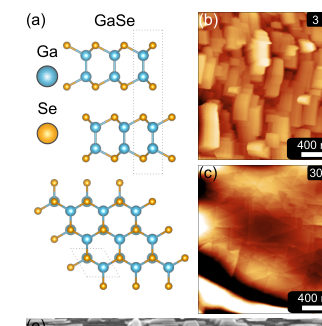
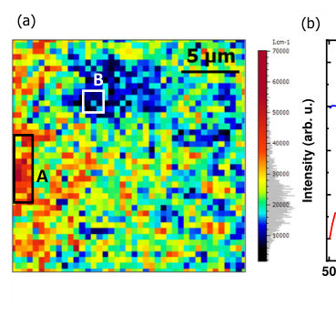
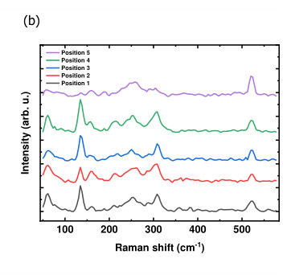
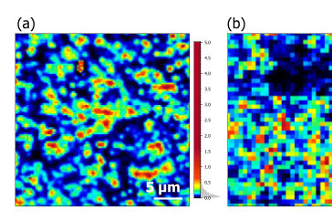
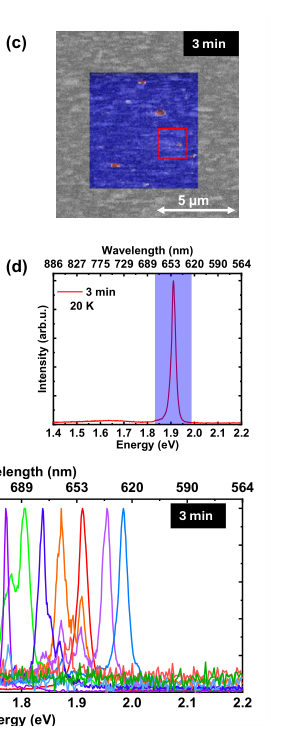
Summary. The study reports the wafer-scale MOCVD growth of GaSe nanosheets on GaP/Si substrates. It shows that by controlling growth time, the material can transition from a broadband classical light source to a high-quality single-photon emitter. This provides a scalable pathway for integrating quantum light sources into silicon-based photonic circuits.
Why it may be interesting. This work is highly relevant for quantum optics as it demonstrates a scalable, scalable-compatible method for generating non-classical light (single photons) using defect engineering in a 2D material platform.
Main problem. The challenge of achieving wafer-scale, controllable growth of 2D semiconductors, specifically III-VI monochalcogenides like GaSe, for integration into scalable classical and quantum photonic technologies.
Main result. The authors demonstrated wafer-scale MOCVD growth of GaSe on GaP/Si that acts as both a broadband classical light source and a high-purity single-photon emitter ($g^{(2)}(0) = 0.15 \pm 0.10$) via defect-induced localization.
Method. Metal-organic chemical vapor deposition (MOCVD) was used for growth, followed by structural characterization (AFM, SEM, XRD, TEM) and optical analysis (micro-PL, TRPL, CL mapping, and HBT interferometry).
Model / system. The physical system consists of 2D Gallium Selenide (GaSe) nanosheets grown epitaxially on GaP/Si (100) substrates, featuring Se-Ga-Ga-Se tetralayers with c-axis orientation.
Key observables. Second-order correlation function $g^{(2)}(0)$, photon lifetime ($ au$), degree of linear polarization (DLP), photoluminescence energy (1.7-2.0 eV), and Raman vibrational modes.
Important parameters / regimes. Growth durations of 3 and 30 minutes; temperature range from 4 K to 100 K; laser power density threshold of $10^6$ W/cm$^2$; lattice mismatch $< 3\%$.
Assumptions / limitations. The emission is attributed to defect-induced localization rather than intrinsic excitonic recombination; the growth is assumed to be phase-pure despite minor $ ext{Ga}_2 ext{Se}_3$ traces.
Figures summary. Fig 1: Crystal structure, morphology (AFM/SEM), and Raman spectra. Fig 2: XRD patterns of the heterostructure. Fig 3: Temperature-dependent PL parameters. Fig 4: 30-min sample PL and polarization properties. Fig 5: Experimental spectroscopy setup. Fig 6: Power-dependent PL, temperature-dependent PL, polarization-resolved PL, TRPL decay, and $g^{(2)}( au)$ correlation.
Paper structure. The paper begins with the MOCVD growth process and structural verification, moves to morphological and phase analysis of different growth regimes, investigates the spatial and spectral origin of light emission via PL and CL, and concludes with the quantum optical characterization of single-photon emission.
Wafer-scale growth of two-dimensional semiconductors remains a key challenge for their integration into photonic technologies. While most studies of two-dimensional semiconductors have focused on transition metal dichalcogenides and their scalable fabrication, comparatively little attention has been given to III-VI monochalcogenides. Here, we report wafer-scale growth of gallium selenide (GaSe) by metal-organic chemical vapor deposition (MOCVD) and investigate its structural and optical properties for visible-range classical and quantum light emission. Two samples with thicknesses ranging from a few monolayers to several micrometers, controlled via the growth time, were investigated. The 30-minute grown sample yields intense, broad photoluminescence spanning 1.7--2.0$\,$eV, whereas the thinner 3-minute sample exhibits discrete narrow emission lines and single-photon emission with $(g^{(2)}(0) = 0.15 \pm 0.10)$. Remarkably, cathodoluminescence mapping reveals pronounced spatial localization of both spectrally narrow and broad emission centers. Together with temperature-dependent power-law analysis and Raman mapping, our results indicate defect-induced emission rather than intrinsic excitonic recombination. These findings establish wafer-scale MOCVD grown 2D GaSe as a platform for classical and non-classical light sources and highlight defect-engineered localization as a route toward scalable quantum photonics.
Authors: Andrei Chuchalin, Alexey Tikan
Type: theory · Category: numerical methods · PDF: https://arxiv.org/pdf/2605.23688v1
Analysis basis: full PDF text, analyzed in chunks
Topic relevance: interference shaping light 2/5 · methods for driven-dissipative 2/5
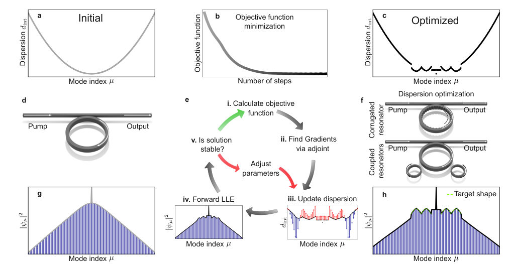
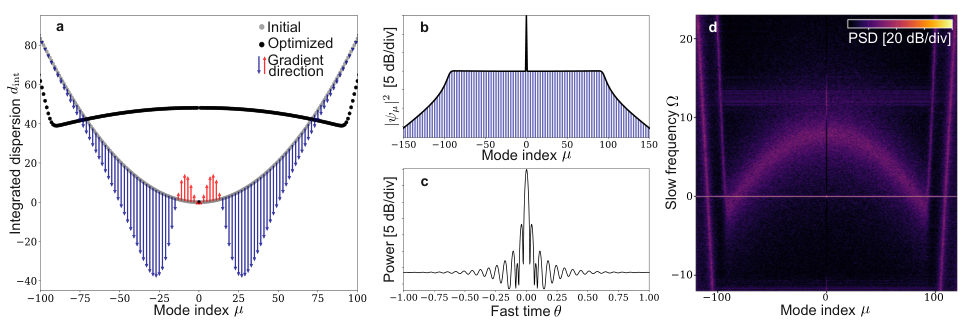
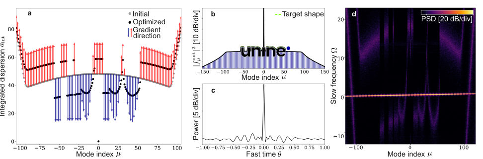
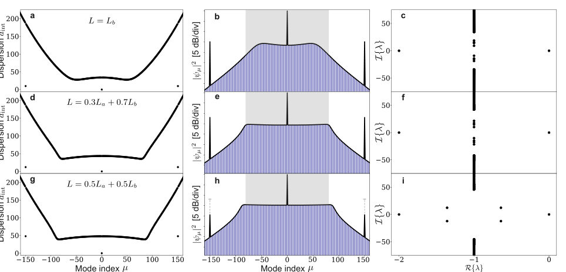
Summary. This paper introduces an efficient inverse-design framework for microresonator frequency combs using the adjoint method. It allows researchers to move beyond manual tuning to directly engineer specific optical spectra, such as flat-top or custom-shaped combs, by optimizing the resonator's dispersion profile.
Why it may be interesting. The use of adjoint-based inverse design and automatic differentiation for controlling nonlinear wave dynamics is highly relevant to the development of customized light sources for quantum control and quantum state manipulation.
Main problem. Traditional microresonator frequency comb design relies on inefficient, manual, and heuristic parameter sweeps that fail to find optimal spectral profiles.
Main result. The authors developed an adjoint-based inverse-design framework that efficiently optimizes the integrated dispersion profile to achieve spectrally flat, arbitrarily shaped, or multi-objective microcomb spectra.
Method. An adjoint-based gradient-evaluation method is used to compute the full gradient of an objective function with only two simulations, combined with gradient descent and automatic differentiation.
Model / system. The system consists of integrated microresonators (microrings) supporting dissipative Kerr solitons, modeled using the Lugiato-Lefever Equation (LLE) or its Fourier-domain Coupled Mode Equation (CME) version.
Key observables. Microcomb spectrum, spectral flatness, sideband-enhanced spectra (soliton Cherenkov radiation), and Nonlinear Dispersion Relation (NDR).
Important parameters / regimes. Integrated dispersion profile (dint), pump-cavity detuning, pump amplitude, coupling efficiency, and mode index.
Assumptions / limitations. The optimization uses a truncated basis of modes (555 modes) which is then scaled to higher resolutions (2055 modes) using quadratic tails.
Figures summary. Fig 1 shows the optimization flowchart and physical platform; Fig 2 demonstrates flat-top comb design and temporal waveforms; Fig 3 shows arbitrary shape synthesis (a logo); Fig 4 illustrates multi-objective optimization trade-offs.
Paper structure. The paper introduces the design challenge, presents the adjoint-based optimization framework, demonstrates applications in spectral flatness, arbitrary shape synthesis, and multi-objective optimization, and concludes with stability and scalability analysis.
Microresonator frequency combs are key components for integrating optical devices into photonic circuits. They provide high stability, coherence, and low noise, even without external stabilization. Yet microcomb design remains largely heuristic: waveguide and resonator parameters are typically swept manually or semi-empirically, and the resulting spectra are evaluated only afterwards. This forward-design workflow is computationally costly, relies heavily on designer intuition, and does not generally identify optimal solutions. Here, we present an adjoint-based inverse-design framework for microresonator frequency combs that directly optimizes the comb spectrum with respect to pre-defined objectives. We demonstrate the power and flexibility of this approach by addressing three challenging problems: designing spectrally flat combs, synthesizing arbitrarily shaped comb spectra, and enforcing several performance metrics simultaneously through multi-objective optimization. Our results show that inverse design offers a systematic and efficient route to compact on-chip light sources with properties tailored to diverse applications.
Authors: Y. Sungtaek Ju
Type: theory · Category: numerical methods · PDF: https://arxiv.org/pdf/2605.23005v1
Analysis basis: full PDF text, analyzed in chunks
Topic relevance: methods for driven-dissipative 2/5 · non-equilibrium dynamics 2/5
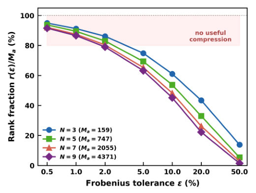
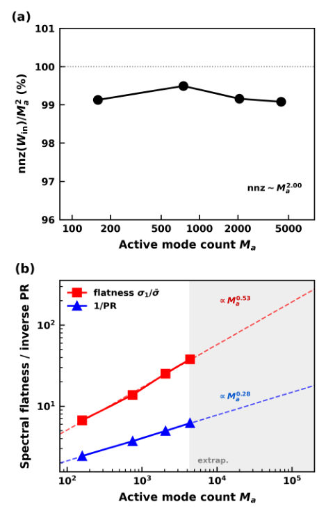
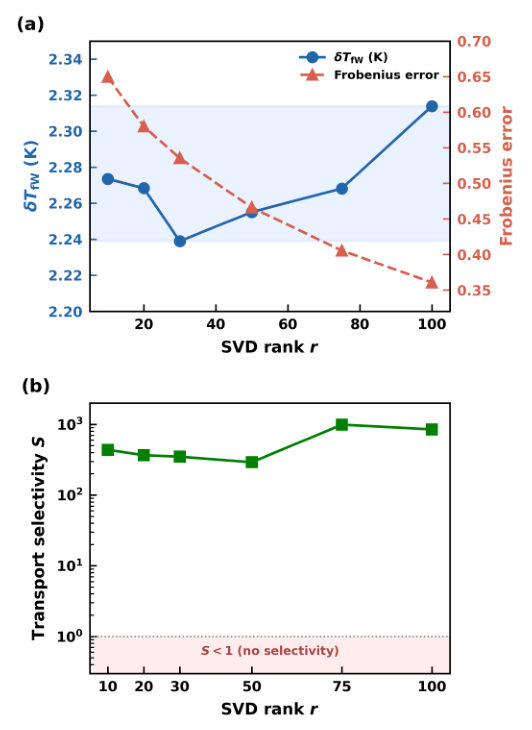
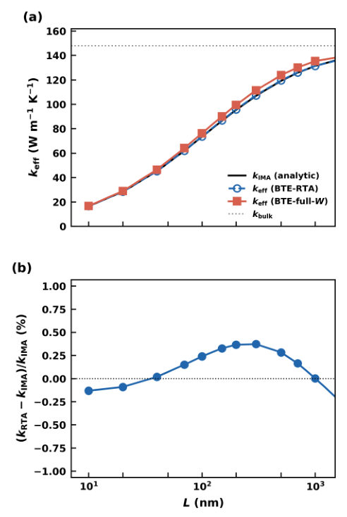
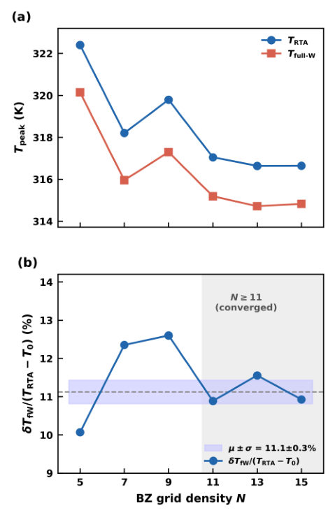
Summary. This paper presents a new numerical solver for the phonon Boltzmann Transport Equation that accurately includes the full scattering matrix without the massive computational cost usually required. It achieves this by exploiting the fact that the non-equilibrium part of the phonon distribution is low-dimensional, even when the scattering operator itself is complex. This enables more precise thermal modeling in nanoscale transistors.
Why it may be interesting. not directly relevant
Main problem. The Relaxation-Time Approximation (RTA) in the phonon Boltzmann Transport Equation (BTE) fails to account for intermode energy redistribution, but incorporating the full scattering matrix is computationally prohibitive due to its high-rank, incompressible nature.
Main result. The authors discover that while the scattering matrix is incompressible, the non-equilibrium phonon distribution exists in a low-dimensional subspace, allowing for an efficient 3D BTE solver that captures a 11.2% correction to temperature rise over RTA.
Method. A deterministic 3D BTE solver using a finite-volume discretization and a hybrid architecture that combines dense spatial sweeps with low-rank SVD-based truncation of the in-scattering operator.
Model / system. Steady-state phonon Boltzmann Transport Equation (BTE) for nanoscale semiconductor structures, such as FinFET-like geometries, including three-phonon Normal and Umpland processes.
Key observables. Effective thermal conductivity, peak temperature rise, non-equilibrium distribution deviation, and transport selectivity.
Important parameters / regimes. Brillouin zone refinement levels, Knudsen number, device length (fin length), and scattering matrix rank.
Assumptions / limitations. The phonon transport is modeled in the ballistic and quasi-ballistic regimes using a linearized BTE and the Stillinger-Weber potential for scattering matrix elements.
Figures summary. The paper includes tables comparing scattering matrix properties (rank, spectral flatness), convergence tests for BZ grid density, and validation of temperature predictions in 3D FinFET structures.
Paper structure. The paper identifies the limitations of RTA, analyzes the incompressibility of the scattering matrix, proposes a low-rank solution-based solver, validates the method against 1D analytic solutions, and demonstrates application to 3D nanoscale devices.
Solutions to the phonon Boltzmann transport equation under the relaxation-time approximation (RTA) are fundamentally limited in that they do not account for the off-diagonal elements of the scattering matrix, which encode intermode energy redistribution. We find that the phonon in-scattering matrix is globally incompressible, requiring nearly its full rank for any useful Frobenius accuracy. The incompressibility worsens as the Brillouin zone is refined. We show that, despite this difficulty, one can develop a computationally efficient 3D BTE solver incorporating the complete scattering matrix by leveraging our two structural discoveries: the non-equilibrium phonon distribution inhabits a remarkably low-dimensional subspace of mode space regardless of how many phonon modes exist, and the leading singular modes of the scattering operator align selectively with this transport-active subspace. Consequently, truncation incurs negligible transport error even under large norm error. The phonon streaming operator's mode-diagonal character further motivates a hybrid architecture that exploits these two properties. When applied to nanoscale structures emulating a fin field-effect transistor, our BTE solver quantifies a geometry-independent multiplicative correction to the temperature rise predicted under RTA. Our theoretical work and resulting BTE solver help enable rigorous study of phonon transport and systematic design of devices and structures in the ballistic and quasi-ballistic phonon transport regime.
Authors: Oliver Solow, Emil J. Bergholtz, Karsten Flensberg
Type: theory · Category: other · PDF: https://arxiv.org/pdf/2605.23725v1
Analysis basis: full PDF text, analyzed in chunks
Topic relevance: methods for driven-dissipative 2/5 · non-equilibrium dynamics 2/5
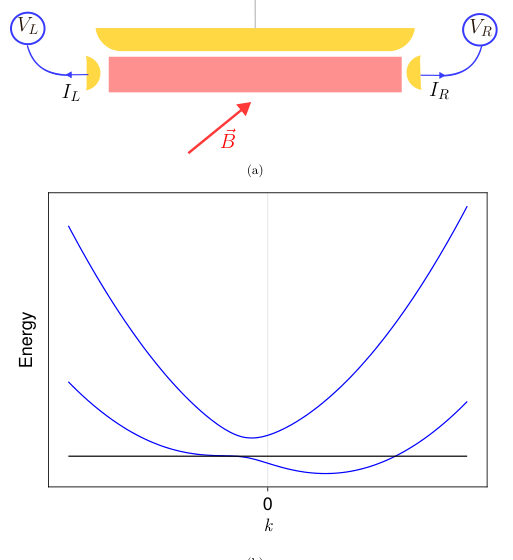
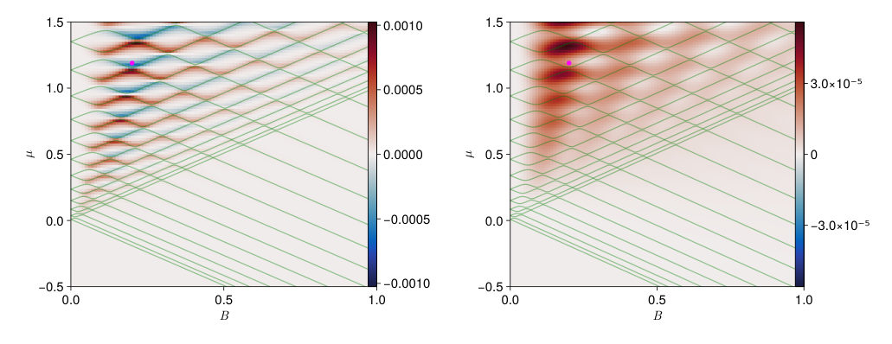
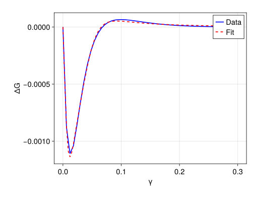
Summary. This paper demonstrates that uniformly dissipative electronic circuits can exhibit nonreciprocal conductance due to asymmetric transmission times. By studying a Rashba nanowire with a skewed magnetic field, the authors show how interference and band structure asymmetry drive this effect. The study highlights that dissipation can qualitatively change the sign of conductance asymmetry.
Why it may be interesting. It provides a mechanism for nonreciprocal transport in non-Hermitian systems that does not rely on the Non-Hermitian Skin Effect, which is crucial for understanding transport in open quantum systems and dephasing in electronic circuits.
Main problem. The paper investigates how uniform dissipation (non-Hermitian effects) affects measurable quantities like conductance, specifically determining the conditions for nonreciprocal conductance (G_LR != G_RL).
Main result. The authors show that nonreciprocal conductance arises from differences in transmission times between left- and right-moving electrons due to asymmetric dispersion relations, and that this effect can change sign depending on dissipation strength.
Method. The study uses an analytical approach relating the S-matrix of a two-terminal system to a multi-terminal system via frequency analytical continuation, supplemented by numerical simulations using the Quantica software package.
Model / system. A ballistic Rashba nanowire with a skewed magnetic field that breaks both inversion and time-reversal symmetry, coupled weakly to a third 'featureless' lead that introduces uniform dissipation.
Key observables. Nonreciprocal conductance difference (Delta G = G_LR - G_RL) and transmission times (tau_LR, tau_RL).
Important parameters / regimes. Dissipation strength (gamma), magnetic field strength (B), chemical potential (mu), and Rashba spin-orbit coupling (alpha).
Assumptions / limitations. The analysis focuses on the weak dissipation limit (gamma -> 0) and assumes the dissipation is uniform across the device.
Figures summary. Fig 1(a) shows the nanowire setup with a third lead; Fig 1(b) shows the asymmetric dispersion relation; Fig 2 displays the conductance difference as a function of system parameters.
Paper structure. The paper introduces the problem of nonreciprocity in dissipative systems, presents a general model of a Rashba nanowire, develops the theoretical link between conductance and transmission times, and then analyzes the dependence of the results on dissipation strength and magnetic field.
When studying non-Hermitian electronic systems, an obvious question is how various non-Hermitian effects affect measurable quantities like the conductance. Here, we show that uniformly dissipative circuits can exhibit nonreciprocal conductance, meaning that the two nonlocal conductances are different. We describe how this happens through a difference in transmission times between left-moving and right-moving electrons. We consider a specific case of a dissipative Rashba nanowire with a skewed magnetic field, and show how this difference in transmission times comes about through interference inside the circuit, and how this is modified as the dissipation strength changes.
Authors: Yishu Huang, Anand Nivedan, Florian Ludwig, Bohai Liu, Michiel Debaets, Steven Brems, Hai I. Wang, Alessandro Principi, Dries Van Thourhout, Christian Haffner, Aron W. Cummings, Klaas-Jan Tielrooij
Type: experiment · Category: other · PDF: https://arxiv.org/pdf/2605.23646v1
Analysis basis: full PDF text, analyzed in chunks
Topic relevance: quantum optics experiment 2/5 · non-equilibrium dynamics 1/5
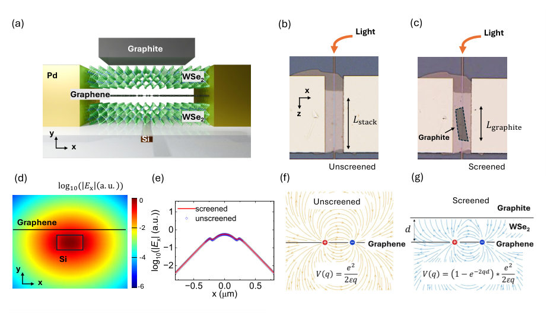
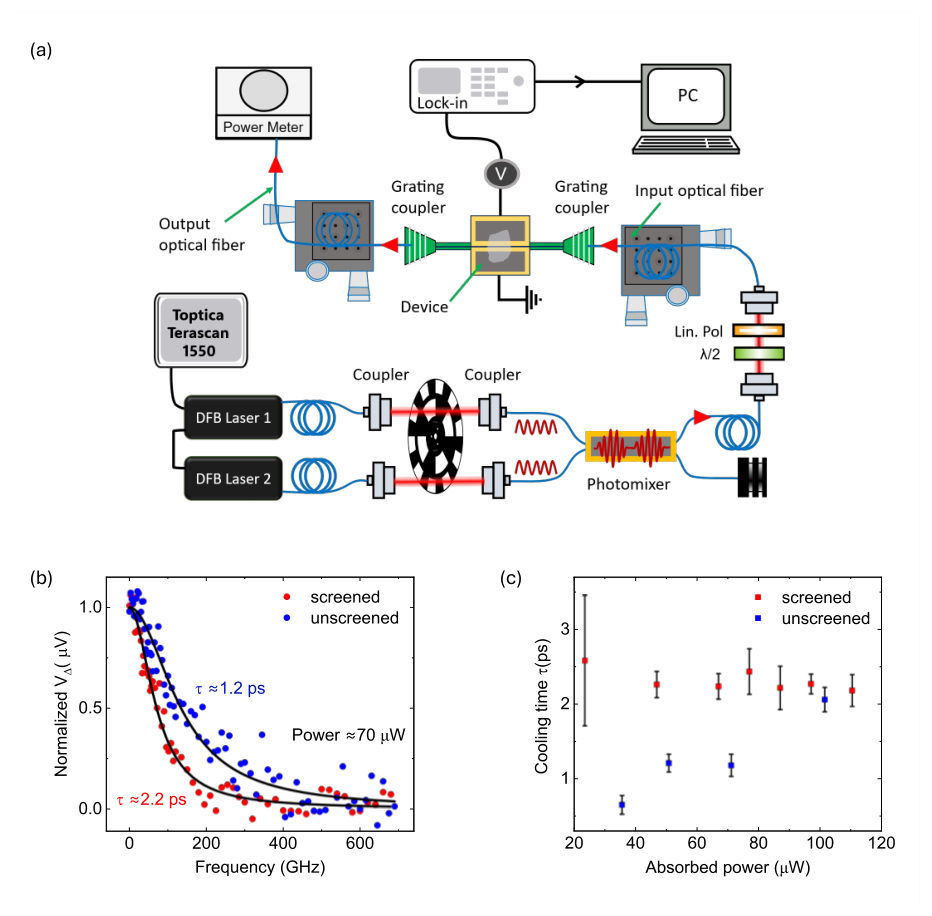
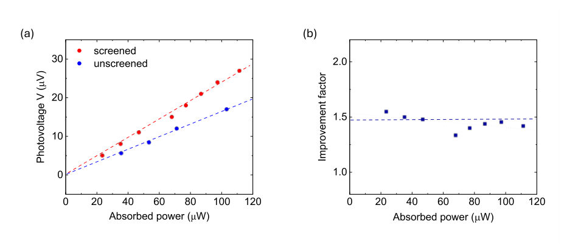
Summary. This paper demonstrates a method to enhance graphene photodetectors by using a graphite layer to screen Coulomb interactions, which slows down hot-carrier cooling. This 'trapping' of heat leads to a significantly improved photothermoelectric response. The findings suggest a scalable way to improve integrated photonics components through engineered carrier dynamics.
Why it may be interesting. not directly relevant
Main problem. The challenge of increasing the photoresponsivity of graphene-based photodetectors by controlling the cooling dynamics of hot carriers.
Main result. Introducing a graphite layer for proximity screening suppresses carrier-carrier scattering, increasing the hot-carrier cooling time by up to a factor of four and enhancing internal photoresponsivity by approximately 50%.
Method. The researchers used a heterodyne photomixing technique with two continuous-wave lasers to modulate absorbed power and measure the resulting carrier temperature oscillations via a lock-in amplifier.
Model / system. A waveguide-integrated photodetector consisting of a WSe2-graphene-WSe2 van der Waals heterostructure placed on a silicon optical waveguide, with an optional nearby graphite layer for proximity screening.
Key observables. Hot-carrier cooling time (tau), internal photoresponsivity, and photovoltage (V_delta).
Important parameters / regimes. Cooling time increase (2-4x), photoresponsivity enhancement (1.5x), wavelength (1550 nm), and the distance (d) between graphene and graphite.
Assumptions / limitations. The cooling is dominated by intrinsic optical phonon relaxation rather than hyperbolic phonon-mediated cooling due to the use of WSe2; the optical mode profile remains largely unchanged by the screening layer.
Figures summary. Figure 1 shows the device schematic, top/cross-section views, and the physical mechanism of proximity screening. Figure 2 displays the Lorentzian roll-off of the photovoltage response and the extracted cooling time versus power. Supplementary figures include material quality verification via Raman and AFM.
Paper structure. The paper introduces the problem of graphene photodetector performance, describes the device architecture and the engineering of the screening layer, details the photomixing experimental setup, presents the results showing enhanced cooling times and responsivity, and concludes with a discussion on the physical mechanism and future scaling.
Graphene has emerged as a promising material for integration into silicon photonics, owing to its ultrafast and broadband photoresponse without the need for an external bias voltage. This photoresponse relies on the photo-thermoelectric effect created by hot carriers. A key factor underlying the performance of graphene photodetectors is the cooling dynamics of these hot carriers. In this work, we engineer these dynamics in a WSe2-graphene-WSe2 waveguide-integrated photodetector. In particular, by introducing proximity screening by a nearby graphite layer to this structure, we prolong the hot-carrier cooling time, leading to an enhanced photoresponse. We characterize the cooling dynamics under continuous-wave laser excitation by employing a photomixing technique, revealing an increase in the cooling time by up to a factor of four. Direct photoresponse measurements show that the internal photoresponsivity improves by approximately 50%. Together, these results demonstrate the potential of proximity screening to enhance the performance of graphene-based photodetectors on an integrated photonics platform.
Authors: Youngju Park, Nicolas Leconte, Prathap Kumar Jharapla, Md Shaifullah, E. H. Hwang, Jeil Jung
Type: theory · Category: other · PDF: https://arxiv.org/pdf/2605.23492v1
Analysis basis: full PDF text, analyzed in chunks
Topic relevance: Frenkel-Kontorova 2/5
Summary. This paper explores how the alignment of two moiré interfaces in trilayer 2D heterostructures leads to 'angle-locking' via commensuration torques. It demonstrates that the overlap of favorable stacking regions stabilizes specific twist angles, providing a mechanism for controlling the structural and mechanical properties of moiré superlattices.
Why it may be interesting. not directly relevant
Main problem. Investigating the energetic origins and stability of commensuration-driven torques and angle-locking in double-moiré trilayer heterostructures.
Main result. The study identifies that double-moiré commensuration creates local energy minima and restoring torques due to the enhanced overlap of low-energy stacking domains, with graphene/hBN systems potentially exhibiting global energy minima at specific angles.
Method. Large-scale atomistic relaxations using the LAMMPS molecular dynamics package with various interatomic potentials (Tersoff, REBO2, and DRIP force-fields) and electrostatic models.
Model / system. Trilayer heterostructures including twisted trilayer hBN (t3BN) homostructures and graphene/hBN heterolayers (e.g., G/BN/G, G/BN/BN) with varying twist angles and lattice mismatches.
Key observables. Total energy per atom, torque (angular derivative of energy), binding energy, and stacking configuration maps.
Important parameters / regimes. Twist angles (theta_12, theta_32), lattice mismatch, torque constants, and electrostatic interaction types (short-range vs. long-range).
Assumptions / limitations. Use of commensurate approximants to allow for periodic boundary conditions in incommensurate phases.
Figures summary. Figure 1 shows energy maps and energy variation vs. twist angle; Figure 2 illustrates local stacking configuration maps; Figure 3 displays sliding-dependent energy maps and binding energy trends for G/BN/G and related systems; Figure 4 shows total energy per atom evolution.
Paper structure. The paper introduces the problem of double-moiré stability, details the atomistic simulation methodology, presents results for t3BN homostructures, extends the analysis to graphene/hBN heterostructures, and discusses the role of electrostatic interactions and superlubricity.
We study commensuration-driven torques and angle locking in double-moiré trilayer hexagonal boron nitride (hBN) and graphene heterostructures using large-scale atomistic relaxations. In twisted trilayer hBN (t3BN) homostructures, double-moiré commensuration ($θ_{12} = -θ_{23}$) give rise to local energy minima accompanied by torque sign reversals, signaling a restoring tendency toward the commensurate configuration. The corresponding binding energies are $\sim$0.2-0.3 meV/atom, originating from enhanced overlap of low-energy stacking domains, although the system is globally stable at zero twist. In contrast, in graphene/hBN heterolayers systems the global energy minimum can coincide with the double-moiré commensuration angle, particularly near $\sim$0.6$^{\circ}$, reflecting competition between lattice mismatch and interfacial relaxation. Incommensurate atomic structures have reduced stabilization due to suppressed overlap of low-energy stacking and have enhanced superlubricity due to spatial averaging of interfacial energies. These results establish double-moiré commensuration as a general, system-dependent mechanism for twist-angle stabilization, whose angular stability is characterized by the torque magnitude and binding energy. Coulomb electrostatic interactions further enhance the stabilization energy without changing the underlying physics.
Authors: Suyang Cai, Mingyang Zheng, Nathan Rao, Glen Gillia, Rebika Makaju, Sadhvikas J. Addamane, Dominique Laroche
Type: experiment · Category: disordered systems and neural networks · PDF: https://arxiv.org/pdf/2605.22945v1
Analysis basis: full PDF text, analyzed in chunks
Topic relevance: non-equilibrium dynamics 2/5
Summary. The researchers found that even in ballistic quantum wires, a significant non-reciprocal Coulomb drag signal persists. They attribute this to low-energy disorder that breaks translational symmetry, challenging existing models that predict minimal non-reciprocity in pristine wires.
Why it may be interesting. The study explores the interplay between electron-electron interactions (Luttinger liquid physics) and disorder-induced rectification, which is relevant to understanding many-body dynamics in 1D systems.
Main problem. Investigating the origin of the unexpectedly large non-reciprocal Coulomb drag component in nearly pristine, ballistic 1D quantum wires.
Main result. A non-reciprocal drag component comparable in strength to the reciprocal component is detected, likely arising from low-energy disorder/potential barriers that break translational symmetry.
Method. 1D Coulomb drag measurements were performed using a constant AC drive current and lock-in amplification in a GaAs/AlGaAs heterostructure device.
Model / system. A 7.2-micron long quasi-1D device with two parallel channels (one ballistic, one non-ballistic) created via Ti/Au top gates in a 2DEG.
Key observables. Drag voltage (reciprocal/antisymmetric and non-reciprocal/symmetric components), conductance (G), and temperature/bias voltage dependence.
Important parameters / regimes. Temperature (down to 30 mK), bias voltage, Luttinger liquid interaction parameter (Kc), and characteristic energy scales (Tc, T0).
Assumptions / limitations. The estimation of the interaction parameter assumes a specific model for Coulomb potential and 1D density; simple barrier transmission models are insufficient for a full description.
Figures summary. Fig 1 shows drag mechanisms and device schematics; Fig 2 shows conductance plateaus and gate voltage dependence under varying temperature and bias.
Paper structure. The paper introduces the drag mechanisms, describes the experimental device and measurement setup, presents conductance and drag data, analyzes temperature/bias dependence using various disorder models, and discusses the implications of the findings.
1D-Coulomb drag serves as a platform for probing electron-electron interactions in 1D systems. Under the charge fluctuation formalism, the non-reciprocal component of Coulomb drag signal in mesoscopic devices is predicted to rely on the breaking of translational invariance due to intrinsic disorder. In this work, we report the measurement of a Coulomb drag device with a ballistic drag wire, allowing us to study the drag signal in nearly pristine quantum wires. Surprisingly, a non-reciprocal component with strength comparable to that of the reciprocal component is still detected across the measured regime, despite the drag wire being ballistic. We suggest that the non-reciprocal signal arises from low energy disorder in the device, which is consistent with the evolution of the drag wire's conductance at low biases voltages and temperatures. Additionally, the non-reciprocal component of the drag signal shows a power-law temperature dependence that coincides with a diffusive model, while the reciprocal component's temperature dependence cannot be explained under the existing framework. The bias voltage dependence of the drag wire conductance is fitted into three models to extract the interaction parameter and disorder level within the wire, but none of the models provides a fully self-consistent explanation for the data.
Authors: Chang-An Li
Type: theory · Category: disordered systems and neural networks · PDF: https://arxiv.org/pdf/2605.23607v1
Analysis basis: full PDF text, analyzed in chunks
Summary. This paper explores how disorder affects the stability of exotic superconducting phases in altermagnetic Josephson junctions. It finds that disorder can drive transitions between 0, pi, and phi phases by suppressing higher-order harmonics and reducing effective spin-splitting. These findings are crucial for understanding the potential for using altermagnets in functional superconducting devices.
Why it may be interesting. not directly relevant
Main problem. The study investigates whether the exotic pi and phi phases in altermagnetic Josephson junctions (AMJJs) are stable against the presence of disorder found in real materials.
Main result. Disorder induces phase transitions between the pi and 0 phases and causes the anomalous phi phase to be highly fragile, eventually collapsing into 0 or pi phases. This is driven by the suppression of higher-order harmonics in the current-phase relation and the reduction of effective spin-split strength.
Method. The authors use a mean-field tight-binding Hamiltonian and the recursive Green's function method to calculate supercurrents, averaging results over thousands of disorder configurations.
Model / system. A two-dimensional d-wave altermagnetic Josephson junction consisting of two s-wave superconductor leads separated by a disordered d-wave altermagnet region.
Key observables. Current-phase relation (CPR), critical supercurrent (Ic), and Fourier harmonic amplitudes (I1h, I2h, I3h).
Important parameters / regimes. Disorder strength (W), junction length (Lx), altermagnetic hopping amplitude (tJ), superconducting gap (Delta), and temperature (T).
Assumptions / limitations. The model assumes a 2D square lattice and uses a mean-field approximation for the superconducting pairing.
Figures summary. Figures show the transition of the CPR from phi to 0 or pi phases and a Fourier analysis demonstrating the decay of higher-order harmonics.
Paper structure. The paper introduces the altermagnetic Josephson junction system, describes the tight-binding model and disorder implementation, presents numerical results regarding phase transitions and supercurrent suppression, and concludes with the physical implications of disorder on phase stability.
Altermagnetic Josephson junctions (AMJJs) can host unconventional $π$ phase and $\varphi$ phase despite vanishing net magnetizations. Whether these phases are stable against disorder existing in real materials remains an open question. Here, we investigate impact of disorder on exotic phases in two-dimensional d-wave AMJJs. We show that disorder is able to induce phase transitions between the exotic $π$ and conventional 0 phases, accompanied by a strong suppression of critical current. This behavior is attributed to modifications of the tunneling Cooper-pair phase shift and superconducting decoherence. Remarkably, the anomalous $\varphi$ phase is highly fragile in presence of disorder and can be driven to either a $π$ phase or 0 phase in a nonreciprocal manner. Across such transitions, the first harmonic of current-phase relation changes sign, while the higher-order harmonics are rapidly suppressed. Our findings reveal the crucial role of disorder in tailoring distinct phases of AMJJs and shed new light on their potential functionalities.
Authors: Wei Yang, Yibo Xu, Shen Li, Jiangchao Han, Jiayou Chen, Juan-Carlos Rojas-Sánchez, Stéphane Mangin, Xiaoyang Lin, Weisheng Zhao
Type: theory · Category: other · PDF: https://arxiv.org/pdf/2605.23577v1
Analysis basis: full PDF text, analyzed in chunks
Summary. This paper proposes a new way to design multiferroic memory by using antiferroelectric transitions to modulate tunneling through momentum-space redistribution. This approach overcomes the traditional conflict between high-performance readout and low-power writing, achieving massive resistance changes at room temperature.
Why it may be interesting. not directly relevant
Main problem. The fundamental trade-off in multiferroic tunnel junctions (MFTJs) where strong electric fields required for high tunnel electroresistance (TER) simultaneously impede efficient ferroelectric polarization switching.
Main result. The discovery of a dual mechanism in an antiferroelectric (AFE) junction that achieves giant TER (~7.6e3%) and TMR (>6.8e5%) by modulating momentum-resolved evanescent decay rates rather than just barrier height, enabling six non-volatile resistance states.
Method. First-principles calculations combining Density Functional Theory (DFT) with the Non-Equability Green's Function (NEGF) formalism.
Model / system. A van der Waals heterostructure consisting of ferromagnetic Fe3GaTe2 electrodes and a bilayer alpha-In2Se3 antiferroelectric/ferroelectric barrier.
Key observables. Tunneling electroresistance (TER), tunneling magnetoresistance (TMR), spin-resolved transmission spectra, and momentum-resolved decay rates.
Important parameters / regimes. Room temperature stability, six distinct resistance states, and switching barriers (approx. 34-37 meV for AFE vs 77 meV for FE).
Assumptions / limitations. Use of GGA-PBE functional with DFT-D3 dispersion corrections and a Hubbard U=0 approximation.
Figures summary. Figure 1 compares FE and AFE switching; Figure 2 shows atomic stacking and electrostatic profiles; Figure 3 presents spin polarization, TMR, and TER spectra; Figure 4 shows LDOS distributions; Figure 5 displays k-dependent decay rate distributions.
Paper structure. The paper introduces the MFTJ trade-off, describes the Fe3GaTe2/alpha-In2Se3/Fe3GaTe2 heterostructure, details the DFT+NEGF methodology, presents results on transport properties and momentum-resolved modulation, and concludes with the implications for multi-state memory.
Multiferroic tunnel junctions (MFTJs), integrating ferroelectric and ferromagnetic functionalities within a single nanoscale device, hold significant promise for non-volatile, multi-state memory and innovative computing paradigms. In conventional MFTJs, tunneling resistance modulation relies primarily on ferroelectric (FE) polarization switching, which alters interfacial electric fields and shifts the Fermi level of adjacent ferromagnetic electrodes. However, achieving high tunnelelectroresistance (TER) through this approach demands strong built-in electric fields, which simultaneously hinder FE polarization switching, creating an intrinsic trade-off between reliable data reading and efficient writing. Here, we propose a dual mechanism that combines antiferroelectric (AFE) phase-transition modulation of the evanescent decay states with interfacial spin filtering based on $Fe_3GaTe_2$/bilayer-$In_2Se_3$/$Fe_3GaTe_2$ heterostructure. Beyond altering the electrostatic potential as in AFE-FE switching, the transitions between head-type and tail-type AFE states preserve the centrosymmetric potential profile yet fundamentally modulate the momentum-resolved distribution of evanescent decay rates across the Brillouin zone. When integrated with perfect spin filtering at the $Fe_3GaTe_2$/$α$-$In_2Se_3$ interface, this mechanism yields a giant TER (~$7.6\times10^3\%$), over 4 times that of conventional FE-based MFTJs, and a TMR exceeding $6.8\times10^5\%$, enhanced by two orders of magnitude over typical MFTJs. These mechanisms resolve the performance trade-off in MFTJs, enabling six distinct non-volatile resistance states at room temperature.
Authors: Xiaoxiao Xiong, Reo Yanagi, Tingtao Zhou, Chiara Daraio
Type: both · Category: other · PDF: https://arxiv.org/pdf/2605.23001v1
Analysis basis: full PDF text, analyzed in chunks
Summary. This paper investigates nonlinear wave propagation in chains of interlocked rings, showing that unlike rigid granular crystals, these systems have tunable nonlinearity and intrinsic dispersion. By adjusting the geometry of the rings, one can control the wave speed and the nonlinear exponent, creating a designable platform for nonlinear dynamics.
Why it may be interesting. not directly relevant
Main problem. Characterizing nonlinear wave dynamics in 1D chains of polycatenated (interlocked) rings and understanding how structural flexibility and geometry tune the system's nonlinearity.
Main result. The researchers demonstrated that polycatenated rings support nonlinear waves with a compact wavefront and trailing oscillations due to energy partitioning into bending modes, and that the nonlinearity exponent can be tuned via ring aspect ratio and contact angle.
Method. The study combines dynamic impact experiments with finite-element analysis (FEA) and discrete-particle simulations using both a dual-spring model and a simplified power-law model.
Model / system. A 1D vertical chain of interlocked stainless steel tori pretensioned by gravity, modeled as a discrete-particle system with nonlinear Hertzian contact and linear structural bending.
Key observables. Force-time profiles, wave speed (Vs), waveform morphology (leading wavefront vs. trailing oscillations), and effective contact exponent (n).
Important parameters / regimes. Ring aspect ratio (R/r), contact angle (theta), effective stiffness (K), effective mass (meff), and gravitational pretension.
Assumptions / limitations. The system is treated as a continuous medium using a long-wavelength approximation; the contact is modeled as Hertzian; and the rings are assumed to be in a perpendicular orientation.
Figures summary. Fig 1 shows the experimental setup and the dual-spring/power-law models; Fig 2 shows FEA results for different aspect ratios; Fig 4 compares experimental wave speeds to theoretical predictions.
Paper structure. The paper introduces the polycatenated system, describes the experimental and numerical models, presents results on waveform morphology and energy partitioning, demonstrates geometric tunability of nonlinearity, and provides an analytical derivation of wave speed scaling.
We study the nonlinear wave dynamics of one-dimensional chains of polycatenated rings. These interlocked structures support amplitude-dependent nonlinear wave propagation driven by tensile activation and internal structural flexibility, unlike traditional granular crystals. Through dynamic impact experiments, finite-element modeling, and discrete-particle simulations of vertical chains pretensioned by gravity, we observe and explain nonlinear waves characterized by a compact leading wavefront followed by persistent trailing oscillations, which arise from energy partitioning into the rings' internal bending modes. Further, we demonstrate that the system's nonlinearity is not a fixed material constant. By altering the rings' geometric aspect ratio and contact angles, we can tune the effective contact exponent and the amplitude scaling of the wave speed. This work builds upon nonlinear wave propagation in classical granular crystals and establishes polycatenated systems as a highly tunable and designable platform to study and control nonlinear dynamics.
Authors: Nathan Pravda, Oleg L. Berman, Klaus Ziegler
Type: theory · Category: other · PDF: https://arxiv.org/pdf/2605.23211v1
Analysis basis: full PDF text, analyzed in chunks
Summary. This paper explores how the Quantum Anomalous Hall effect influences the light-matter interaction in 2D materials. It identifies a sharp transition in optical transparency at the bandgap energy and demonstrates that these optical properties can be used to accurately measure the material's bandgap.
Why it may be interesting. not directly relevant
Main problem. The study investigates the frequency-dependent optical properties (transmission, reflection, and absorption) of 2D materials exhibiting the Quantum Anomalous Hall effect.
Main result. The optical response shows a universal behavior depending on the ratio of photon energy to bandgap energy, featuring a singular point of total reflection at the bandgap threshold and recovering graphene-like behavior as the gap vanishes.
Method. The authors use the Kubo formalism to derive optical conductivities and apply Maxwell's equations with boundary conditions at the 2D sheet to calculate electromagnetic coefficients.
Model / system. A two-band model of a gapped 2D material with intrinsic time-reversal symmetry breaking, characterized by longitudinal and antisymmetric Hall conductivities.
Key observables. Transmission (T), reflection (R), and absorption (A) coefficients.
Important parameters / regimes. Scaled frequency (zeta = h-bar*omega/2m), bandgap energy (2m), and the fine-structure constant (alpha).
Assumptions / limitations. Low temperatures where thermal fluctuations are negligible, an isotropic 2D sheet, and a focus on universal scaling rather than non-universal material parameters.
Figures summary. Figure 1 shows optical conductivities vs. scaled frequency; Figure 2 displays the evolution of T, R, and A coefficients; Figure 3 illustrates the singular jump in the reflection coefficient at the threshold.
Paper structure. The paper introduces the physical problem, defines the conductivity model using the Kubo formalism, derives the electromagnetic response coefficients, analyzes different frequency regimes (insulating vs. metallic), and discusses the limits of vanishing gaps.
We study the optical properties of gapped two-dimensional materials which are subject to the quantum anomalous Hall effect. At sufficiently low temperatures the transmission, reflection and absorption coefficients are found to have a universal behavior that depends only on the ratio of the photonic energy and the gap energy. There is a singular behavior with total reflection when these energies are equal. In the limit of a vanishing gap we recover results for graphene, where the optical coefficients depend only on the fine-structure constant. The observed optical properties provide an accurate measurement of the bandgap.
Authors: Mohit Mudgal, Suman Nandi, Mohamed El Gazzah, Masashi Arita, Shin-ichiro Ideta, Nirmal J. Ghimire, Kenya Shimada, Anup Pradhan Sakhya
Type: both · Category: strongly correlated electrons · PDF: https://arxiv.org/pdf/2605.23836v1
Analysis basis: full PDF text, analyzed in chunks
Summary. This paper uses polarization-dependent ARPES and DFT to reveal the orbital-selective electronic structure of the magnetic topological semimetal EuAgAs. It identifies Dirac-like states and a van Hove singularity that are robust against antiferromagnetic ordering. The findings provide crucial insight into how orbital symmetry and magnetism interplay in topological materials.
Why it may be interesting. not directly relevant
Main problem. The study aims to investigate the electronic structure, orbital character, and the impact of antiferromagnetic ordering on the low-energy states of the magnetic topological semimetal candidate EuAgAs.
Main result. The researchers identified orbital-selective Dirac-like states and a higher-order van Hove singularity, finding that the low-energy electronic structure remains largely unaffected by the antiferromagnetic transition at 12 K.
Method. The study combines polarization-dependent and photon-energy-dependent ARPES with Density Functional Theory (DFT) calculations using the VASP package and Wannier90.
Model / system. The physical system is EuAgAs, a magnetic topological Dirac semimetal candidate with a hexagonal ZrBeSi-type structure and an antiferromagnetic ground state.
Key observables. Fermi surface mapping, constant energy contours, band dispersions, spectral intensity variations under different polarizations, and magnetic susceptibility.
Important parameters / regimes. Néel temperature (TN) approx 12 K, photon energies ranging from 9 to 32 eV, and temperature range from 9 K to 30 K.
Assumptions / limitations. The study assumes the validity of the DFT+U formalism for Eu 4f states and uses the GGA-PBE functional with spin-orbit coupling.
Figures summary. Fig 1 shows magnetic structure and calculated bands; Fig 2 compares experimental and theoretical Fermi surfaces; Fig 3 illustrates 3D band dispersions and van Hove singularities; Fig 4 shows temperature-dependent FS maps; Fig 5 demonstrates orbital-selective intensity modulation via polarization.
Paper structure. The paper introduces the material and its magnetic properties, presents experimental ARPES results (Fermi surface and dispersion), compares these with DFT calculations to identify orbital character, investigates the 3D nature of the bands, and discusses the stability of the electronic states across the magnetic transition.
Magnetic topological semimetals provide a promising platform for emergent quantum phenomena driven by the interplay between magnetism and relativistic fermions, including anomalous transport effects and tunable topological phases. Here, we investigate the electronic structure and orbital character of EuAgAs, a magnetic topological Dirac semimetal candidate, using density functional theory (DFT) and polarization dependent angle resolved photoemission spectroscopy (ARPES). Fermi surface mapping and constant energy contours measured at 9 eV reveal ring like features that systematically expand with increasing binding energy, consistent with nearly linear low energy Dirac like dispersion. ARPES measurements at different photon energies hint at the presence of a van Hove singularity predicted by DFT calculations. Furthermore, this indicates that the photoemission matrix elements are highly sensitive to the excitation energy, allowing different photon energies to selectively probe distinct orbital characters. Polarization dependent ARPES measurements performed in s- and p-polarized geometries exhibit pronounced variations in spectral intensity, indicating symmetry selective orbital contributions to electronic states. These matrix element driven intensity modulations are well reproduced by DFT calculations. Furthermore, the observed Dirac like states remain nearly unchanged over the temperature range from 9 K to 30 K, suggesting that the magnetic ordering has minimal influence on the electronic structure. Our combined experimental and theoretical results provide detailed insight into the orbital selective electronic structure of EuAgAs and its implications for magnetic topological quantum states.
Authors: David Perconte, Thibault Charpentier, Nikolaos Koutsopoulos, Kalpajit Roy, Nadjib Benchabane, Xiaoli Peng, Florent Blondelle, Frédéric Gay, Mikhail Feigel'man, Viktor Kabanov, Benjamin Sacépé
Type: both · Category: disordered systems and neural networks · PDF: https://arxiv.org/pdf/2605.23838v1
Analysis basis: full PDF text, analyzed in chunks
Summary. This paper demonstrates that in strongly disordered superconductors, the superfluid density is unexpectedly resilient to magnetic fields, decaying only logarithmically due to a collective pinning effect. It identifies a continuous quantum critical point at the transition to the insulator. The discovery of a positive Kerr effect in the vortex glass also suggests potential applications in quantum sensing.
Why it may be interesting. The study explores the dynamics of a many-body system (vortex glass) subject to competing random potentials and long-range interactions, which is highly relevant to the study of localization and collective dynamics in disordered many-body systems.
Main problem. Understanding the mechanism behind the magnetic-field-driven superconductor-insulator transition (SIT) in strongly disordered superconductors and how the vortex glass state influences the collapse of superfluid stiffness.
Main result. The superfluid density decreases only logarithmically with the magnetic field due to a collective vortex-pinning mechanism where vortex-vortex interactions enhance pinning, eventually vanishing linearly at a continuous quantum critical point.
Method. The study combines plasmonic microwave spectroscopy of superconducting resonators with simultaneous DC transport measurements and numerical simulations of 2D logarithmically interacting particles in a random potential.
Model / system. The physical system consists of amorphous indium oxide (a:InO) thin films in a high-disorder, high-magnetic-field regime, modeled as a 2D assembly of vortices in a random pinning potential with logarithmic interactions.
Key observables. Superfluid stiffness (extracted from kinetic inductance), sheet resistance, critical current density, internal quality factor, and microwave transmission (S21).
Important parameters / regimes. Magnetic field (B), critical field (Bc), disorder strength (W), temperature (T ~ 10 mK), and vortex density (n/nc).
Assumptions / limitations. The London approximation for vortex interactions fails at high densities; the system is treated as effectively 2D due to the thin film geometry.
Figures summary. Figure 1 shows the resonator device and microwave transmission; Figure 2 displays superfluid stiffness decay across different disorder levels; Figure 3 shows magnetoresistance isotherms and the linear approach to the critical field; Figure 4 illustrates the positive Kerr nonlinearity and power-dependent dissipation.
Paper structure. The paper introduces the problem of the SIT, presents experimental microwave spectroscopy results showing anomalous logarithmic decay, proposes a 'cage model' for interaction-enhanced pinning, validates this with numerical simulations of vortex glasses, and concludes with observations of nonlinear electromagnetic responses.
The interplay between disorder and vortex--vortex interactions in strongly disordered superconductors in a magnetic field can stabilize a vortex-glass state, characterized by strong pinning and the absence of positional order. Yet its role in the destruction of superconductivity at the field-driven superconductor--insulator transition has remained unresolved. Here we use plasmonic microwave spectroscopy of superconducting resonators patterned from amorphous indium oxide thin films to directly track the superfluid density up to the critical field $B_c$. We find an unexpected resilience of the superfluid density, which decreases only logarithmically over nearly three orders of magnitude in field, in stark contrast to the rapid power-law suppression expected for vortex lattices. We attribute this anomalously slow decay to a collective vortex-pinning mechanism counterintuitively enhanced by vortex--vortex interactions. The superfluid density then vanishes linearly at $B_c$, where independent magnetoresistance measurements identify a continuous quantum critical point, unlike the abrupt transition observed at zero field. We further uncover an exceptionally large nonlinear electromagnetic response of the vortex glass, manifested as a pronounced positive-Kerr effect with potential for quantum sensing. These results show how disorder controls the critical magnetic field and identify the vortex glass as the key intermediate state governing the magnetic-field-induced superconductor--insulator transition.
← Index · ← Previous · Next →